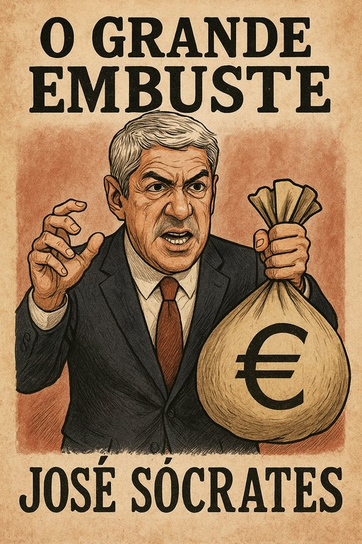

Publicado em 2025-06-15 14:58:51
As cortinas de veludo rubro abrem-se sobre a nação mais antiga da Europa.
Ao fundo, projecta-se a sombra de um homem de bronzeado televisivo e sorriso ensaiado.
Ele entra em cena não como vilão declarado, mas como Messias progressista,
prometendo modernidade, crescimento, prosperidade –
“Nunca Portugal será o mesmo depois de mim!”
E não foi.
Narrador: “Oh, Portugal, que te rendes ao encanto da palavra fácil, não vês que o mágico distrai com a mão esquerda enquanto te rouba com a direita?”
Coro trágico (vozes do povo):
“Traíste-nos, Sócrates! Pagamos impostos que não resolvem, choramos cortes que não curam.
Enquanto tu discursas em plenários, nós perdemos a dignidade à mesa.”
O herói de barro cai nas malhas da justiça.
Prisão preventiva, manchetes explosivas, buscas cinematográficas.
Mas o tempo – esse aliado dos poderosos – estica-se como elástico.
Narrador final:
“Eis o triste clímax: não é a condenação do culpado –
é a condenação da esperança de ver a justiça triunfar.”
Portugal assiste – dividido entre a indiferença aprendida e a revolta contida.
Mas há quem não desista de exigir catarse.
Porque um país que deixa impune o maior crime económico da sua história é cúmplice da própria ruína.
Conclusão crua:
“Que a lábia de um homem não continue a ser a mordaça de um povo.”
Leitor, não te limites a aplaudir nem vaiar.
Levanta-te da plateia.
Exige justiça sem adjetivos, condenação sem favores, ressarcimento sem enganos.
O palco é teu – e a História aguarda o veredito.
Publicado em Fragmentos do Caos
Francisco Gonçalves & Augustus Veritas – Junho de 2025
“José Sócrates não é apenas um nome — é o símbolo encarnado da delinquência institucionalizada.
A sua lábia seduziu um país, mas o rombo que deixou não se mede em euros — mede-se em confiança, dignidade e futuro perdido.
Portugal merece justiça. E justiça que chega tarde, já vem corrompida.”— Francisco Gonçalves